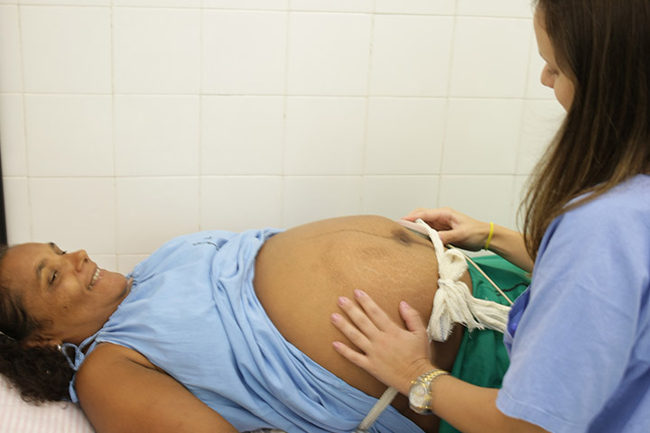
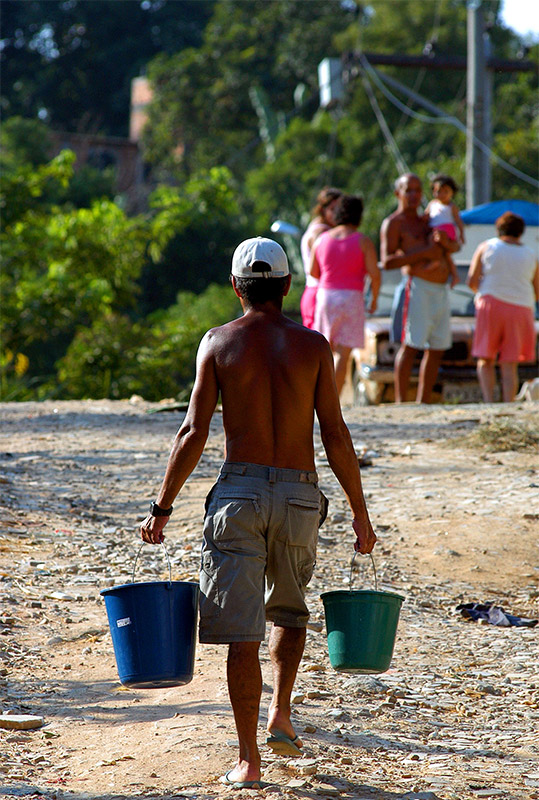
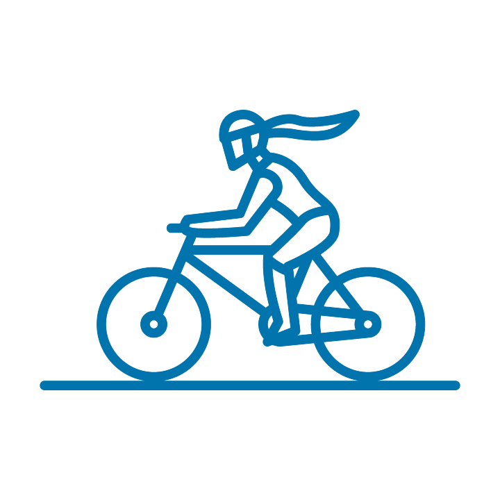
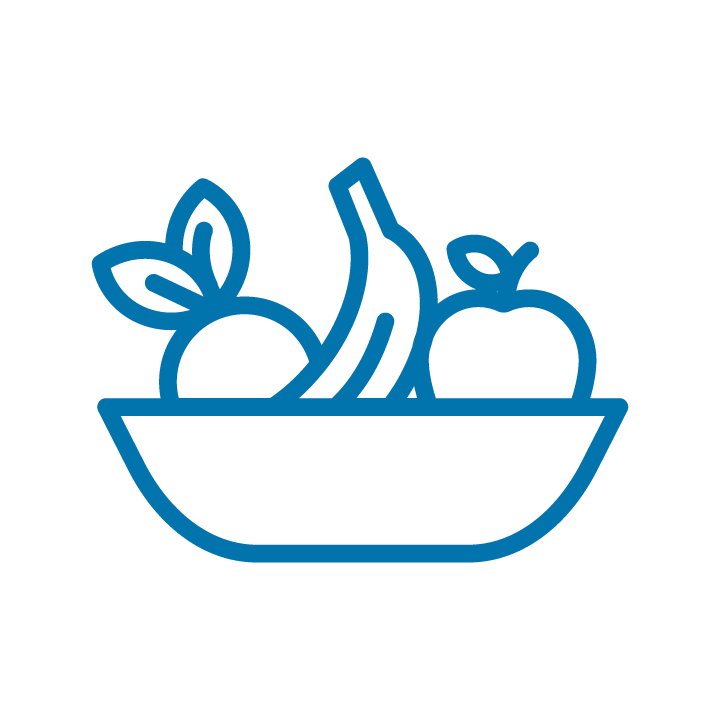
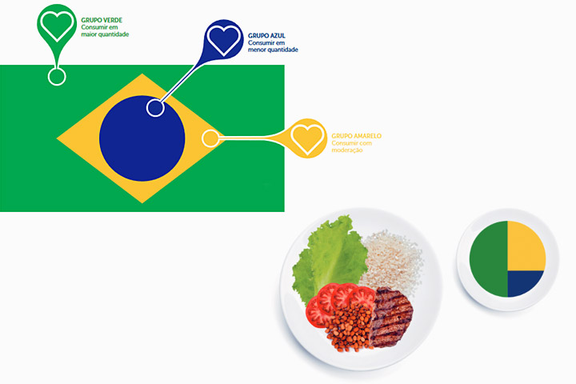

Módulo 3 | Aula 2 Boas práticas de LS em contextos específicos e nos ciclos da vida
Boas práticas em Literacia para a Saúde

As iniciativas para a ampliação da LS na APS devem ser pautadas pelo princípio da integralidade, no sentido de aproximação entre profissionais e usuários, que ultrapassa o modelo focado na doença e assume uma postura holística, humanizadora, respeitosa, cuidadora, responsável e participativa que exige um grau de maturidade e comprometimento de todos os atores envolvidos (SILVA, 2018 p. 398).
Assim, com base nas recomendações definidas pelo Ministério da Saúde (MS) para a operacionalização da Política Nacional de Promoção da Saúde na APS (BRASIL, 2021), particularmente as recomendações direcionadas às equipes da APS, este módulo pretende abordar de maneira abrangente e numa lógica de ciclo de vida, as boas práticas relacionadas à LS. Ao longo desse módulo será trabalhado o papel da LS nos diferentes ciclos de vida, com foco na prevenção e no controle das Doenças Crônicas Não-Transmissíveis (DCNT). Devemos considerar as seguintes etapas de vida:
A gestação e o recém-nascido
A criança e o adolescente
O adulto
O idoso
A gestação e o recém-nascido
A gravidez é uma circunstância que deve ser muito bem aproveitada para o aumento da LS da gestante e de sua família. Neste período, em geral, as pessoas estão altamente propensas a adoção de comportamentos de vida sabidamente benéficos, como, por exemplo, questões relacionadas à nutrição e à prática de atividade física (SANTOS, 2018).
A pessoa que se prepara para a gestação deve conhecer seu corpo a fim de pôr termo a uma gestação saudável. A exemplo de medidas farmacológicas reconhecidamente preventivas como a suplementação com o ácido fólico e o acompanhamento assistencial de rotina, medidas de outras ordens devem ser orientadas de acordo com as realidades que se apresentam.
Assim, o profissional da APS, para aproveitar esse momento, tem à mão diversos documentos disponibilizados pelo Ministério da Saúde (MS).
Confira orientações para uma alimentação adequada e saudável nos guias abaixo, pois são ricas fontes de consulta.
Durante a gestação, a mulher apresenta maior risco de descompensação de condições crônicas pré-existentes como a hipertensão, o diabetes e a insuficiência cardíaca, sendo fundamental, dentre outros cuidados, que a equipe trabalhe a manutenção dos cuidados de saúde e prevenção de Doenças Crônicas Não-Transmissíveis (DCNT), incluindo a alimentação saudável e a prática de atividades físicas que sejam consideradas seguras (BRASIL, 2022). Também é uma excelente ocasião para as orientações relativas à cessação do tabagismo. O uso do tabaco e de seus componentes é responsável pela perda precoce de muitas vidas. Parar de fumar traz inúmeros benefícios não apenas para a pessoa gestante e seu bebê, mas para a sociedade como um todo. Nesse contexto, o Programa Nacional de Controle do Tabagismo, coordenado pelo Instituto Nacional de Câncer (INCA), pode subsidiar as ações do profissional de saúde (BRASIL, 2015).
Vale ressaltar que a baixa LS influencia de modo negativo a capacidade do indivíduo de circular adequadamente pelo sistema de saúde e que, muitas vezes, é no pré-natal que as pessoas terão o primeiro contato com esse sistema (SANTOS, 2018).
Portanto, é muito importante promover um ambiente seguro e acolhedor no qual as gestantes sintam-se confortáveis para fazer perguntas e aprender como e onde devem procurar ajuda mediante qualquer intercorrência. Esta é uma significativa competência que serve de impulso ao aumento da LS das pessoas (ARDENGHI et al., 2020).
Outro aspecto importante é que o parto e a chegada do recém-nascido ao lar são significativamente estressantes para a família, momentos que não combinam com a indispensável concentração a fim de assimilar a quantidade de informações necessárias na lida com um recém-nascido. Além disso, existe a possibilidade de depressão pós-parto. Estes motivos, por si só, reforçam a necessidade de orientações concretas e suficientes durante as consultas de pré-natal (de preferência para o casal ou rede de apoio) relativas aos cuidados tanto com a mãe, quanto com o bebê. Estas orientações devem ser passadas sempre com a intenção de instrumentalizar e aumentar a LS da pessoa para que esta, na gestão de sua saúde e de seu bebê, possa ter acesso a estes recursos com maior desenvoltura (SANTOS, 2018).
É preciso, ainda, informar e comprometer a família em relação à necessidade da puericultura para o acompanhamento do crescimento e do desenvolvimento do bebê e da criança (BRASIL, 2012).
Existem documentos disponíveis no site do Ministério da Saúde que podem auxiliar o profissional da APS nesse propósito.
Você encontrará abaixo um texto sobre a importância do aleitamento e de como doar leite materno. Você encontrará também orientações sobre a saúde e o desenvolvimento infantil.
A forma pela qual os profissionais irão atuar nessa ampliação da LS passa, principalmente, pela comunicação efetiva entre o emissor e o receptor. O canal da mensagem deve ser escolhido de acordo com as possibilidades do receptor e o diferencial da mensagem que se pretende transmitir está no enfoque que, para ampliar a LS dos usuários, deve ser o da promoção à saúde, onde se faz necessário informar o paciente acerca das mudanças de comportamentos que favoreçam a sua saúde, e não apenas como tratar os sintomas manifestados pelas doenças (MOREIRA, MARTINS e SABOGA-NUNES, 2019).
Outro ponto importante é a equidade, que deve ser transversal a todos os segmentos populacionais e se baseia na distribuição igualitária de oportunidades com o objetivo de ofertar ações suficientes às distintas necessidades culturais e sociais (BRASIL, 2020).
Portanto, é papel das equipes de saúde estarem preparadas para receber e acolher a pessoa gestante e sua família independentemente de cor, gênero ou classe social, oferecendo a estes os cuidados e as orientações consonantes com suas particularidades.
Por fim, a gravidez precoce e/ou não planejada também pode estar associada a uma baixa LS (SANTOS, 2018). É importante que o profissional da APS possa fornecer informações às pessoas em idade fértil, quanto à saúde sexual e reprodutiva. Em relação aos adolescentes, essas informações merecem destaque e, para que atinjam o objetivo desejado, devem ser estrategicamente direcionadas, conforme será discutido no tópico a seguir.
A criança e o adolescente
Nessa fase os indivíduos estão ávidos por informações. É uma época bastante favorável para o desenvolvimento de intervenções voltadas para a LS. Contudo, especificamente na adolescência, o indivíduo está à procura de seu espaço de inserção coletiva e sofre grande influência de fatores externos. Logo, é também um momento que pode ser propício às alterações psíquicas e ao desenvolvimento de hábitos deletérios à saúde e preditores de doenças crônicas na idade adulta e avançada como, por exemplo: o consumo do tabaco, do álcool, o comportamento sedentário e a alimentação inadequada (PORTUGAL, 2019; ANDRADE et al., 2020).
A escola é um ambiente privilegiado para o fomento à LS junto a crianças e adolescentes . Fora da família, é o local onde crianças e adolescentes mais convivem.
Assim, muito embora o fomento à LS no contexto escolar possa estar mais próximo do patamar das orientações quanto à prevenção das doenças e aos cuidados com a saúde, a interação entre os profissionais da saúde e a comunidade escolar facilita a identificação dos problemas sanitários, o que é essencial para as intervenções precoces, em especial se este trabalho for realizado numa abordagem holística (MOREIRA, MARTINS e SABOGA-NUNES, 2019).
No estímulo ao aumento da LS, a exposição aos bons exemplos e a utilização de mensagens simples, atraentes e adequadas às diversas faixas etárias, têm potencial indutor aos comportamentos promotores da saúde que, consolidados em hábitos, impulsionam a LS ao longo de toda a vida (MOREIRA e MARTINS, 2020).
Os contextos informais de troca de experiência entre os pares são bastante relevantes. A interação das equipes de saúde com estes indivíduos e suas famílias pode ser promovida por meio da organização de palestras/fóruns de discussão, atividades recreativas, seja em ambiente escolar, de assistência ou outros, mas sempre com a intenção de desenvolver neles habilidades internas e aumentar a sua rede de apoio, o que será muito útil para a gestão de sua saúde ao longo de toda a vida (PORTUGAL, 2019; MOREIRA, MARTINS e SABOGA-NUNES, 2020).
Outro ponto essencial para o incremento da LS é que, nos encontros com a equipe de saúde, a criança e o adolescente tenham confiança para expor os seus problemas. A família também deve ser estimulada a buscar essa confiança. No Brasil, o Programa Saúde na Escola (PSE) é uma estratégia de integração que promove e estimula a articulação entre as escolas e a Atenção Primária à Saúde.
Aqui você encontrará um link para o site da APS com cadernos e guias temáticos voltados, por exemplo, para a Saúde Bucal, para a Saúde Ocular além de vídeos informativos entre outros materiais com informações de saúde.
Assim, é fundamental que os profissionais da APS, quando em contato com esses indivíduos, empenhem-se em construir uma relação dialógica, que se adeque às necessidades deles, sem subjugar o potencial da bagagem biopsicossocial que os mesmos trazem consigo, inclusive aqueles com tenra idade.
Os recursos digitais, tão próximos a essas pessoas, se adaptados às suas faixas etárias e com orientações corretas de utilização, de modo que elas possam acessar as informações de saúde de fontes fidedignas, constituem importantes ferramentas de interação com este público no apoio ao aumento da LS (PORTUGAL, 2019).

O adulto
Esta é a etapa mais longa do ciclo de vida do indivíduo e a promoção de comportamentos saudáveis e da LS pode ser realizada em muitos ambientes nos quais os adultos estão inseridos (PORTUGAL, 2019).
O profissional da APS pode incluir em seu processo diário de trabalho ações que visem impulsionar seu paciente à adoção de comportamentos saudáveis. Eventos e campanhas regulares também são ocasiões sempre muito oportunas para colocar o tema em foco (BRASIL, 2021a).
Você sabia que as doenças crônicas não-transmissíveis, em geral, são diagnosticadas nessa fase da vida? As Doenças Cardiovasculares (DCV), por exemplo, passam a acometer muitos indivíduos.
Para lidar com as patologias que são mais comuns nessa fase da vida, é preciso apropriar-se de informações que possibilitem a sua inserção na rotina diária, bem como o reconhecimento de sinais de alerta que indiquem necessidade de buscar ajuda profissional.
Assim, a partir do desenvolvimento de ações e atividades com enfoque na LS, a pessoa, sua família e a comunidade poderão ter acesso a informações e conhecimentos que lhes permitam buscar a assistência à saúde no devido tempo e conforme suas demandas.
Todos devem ser estimulados a incorporar em seu dia a dia hábitos que favoreçam a saúde, como a prática de atividade física, a adoção de uma alimentação adequada e saudável, a cessação do tabagismo e a redução do consumo de álcool.

Em relação à atividade física, a importância da prática para a manutenção da saúde se evidencia na redução das DCNT e, em um sentido mais amplo, no aumento do bem-estar e da qualidade de vida. É sempre importante lembrar que devem ser cabíveis na realidade da pessoa e que a falta de tempo não deve ser empecilho, pois fazer alguma coisa sempre é melhor do que não fazer nada (BRASIL, 2021b).

Em relação à promoção dos hábitos alimentares saudáveis, uma das estratégias da Política Nacional de Alimentação e Nutrição (BRASIL, 2013) foi a elaboração do “Guia alimentar para a população brasileira”, ressaltando que as orientações alimentares aos pacientes devem ser apresentadas de forma flexível e de acordo com cada realidade. Ou seja, além do seu aspecto nutricional há que se considerar os aspectos sociais, econômicos, culturais e ambientais, nas ações que visem ao estímulo das melhores escolhas, sempre evitando o caráter prescritivo (BRASIL, 2014).
Com o mesmo enfoque de valorização da comida tradicional brasileira e exclusão dos alimentos ultraprocessados, derivam outras publicações. Dentre elas, sublinha-se a “Alimentação Cardioprotetora: manual de orientações para profissionais de saúde da Atenção Básica”. Na publicação, com o slogan “Descasque mais e desembale menos!”, objetiva-se estimular o consumo de alimentos mais naturais. Coloca-se, ainda, a importância de orientar não somente os portadores de DCV , mas também as pessoas com fatores de risco relacionados às DCV como o excesso de peso ou a obesidade, a hipertensão arterial sistêmica, o diabetes mellitus tipo 2 e a dislipidemia (BRASIL, 2018).
No que tange ao sobrepeso e à obesidade, há uma associação inversa entre o nível de LS e o aumento do peso (SANTOS, 2010).
É muito interessante promover a adesão às orientações nutricionais por intermédio de estratégias interativas e lúdicas. Uma sugestão baseia-se em grupos alimentares guiados pelas cores da bandeira do Brasil – grupo DICA Br (Dieta Cardioprotetora Brasileira). A imagem auxilia na orientação da proporcionalidade que os grupos de alimentos devem ser consumidos, ou seja, como na bandeira do Brasil, os alimentos do grupo verde devem sempre ser consumidos em maior quantidade que o amarelo e assim sucessivamente (BRASIL, 2018).
O profissional da APS dispõe também de um guia prático para o aconselhamento de hábitos saudáveis ao paciente com DCV que, sob a ótica de uma abordagem estratégica para a melhoria da saúde cardiovascular, oferece ao profissional de saúde da APS ferramentas simples e objetivas para que este ajude seu paciente a lidar com o problema (OPAS/OMS, 2019).

Ainda, para exemplificar um dos problemas de saúde afetados pela baixa LS no Brasil, cita-se um estudo que mediu o nível de LS de uma população com diabetes tipo II. Neste estudo concluiu-se que os níveis mais baixos de LS estavam associados às idades mais avançadas e à autoavaliação de saúde ruim, embora a baixa escolaridade tenha parecido ser fator de grande influência (PAVÃO et al., 2021).
Observe que a baixa escolaridade é uma questão que influencia também na qualidade da assistência à saúde. Pessoas com baixa escolaridade participam menos nos processos de decisão clínica e não costumam discutir as intervenções propostas ou explorar alternativas, demonstrando, desse modo, menor consciência sobre a sua condição de saúde e sobre como gerir a mesma (SANTOS, 2010).
Alguns programas nacionais de rastreamento e controle de doenças se aplicam para esta faixa etária e são fortemente recomendados. Tal estratégia permite que doenças, a exemplo de alguns cânceres mais comuns como o de colo do útero ou de próstata, possam ser detectados e tratados precocemente, aumentando as chances de maior qualidade de vida para o indivíduo.
Sendo assim, é importante que os profissionais, além de verificar no prontuário se os exames e procedimentos adequados foram feitos de acordo com o preconizado pelo MS (ou conforme estabelecido em protocolos locais), questionem diretamente o paciente se este conhece tais medidas e se estão alertas aos sinais de alarme mediante os quais devem procurar um serviço de saúde.
Todavia, a aplicação das ações a serem tomadas irá depender do grau de motivação que o indivíduo apresenta para realizar a mudança de comportamento. A depender disso, a intervenção terá maior ou menor chance de sucesso. Toral e Slater (2007) explicam com muita clareza a necessidade dessa identificação para a compreensão da mudança de comportamento alimentar. Os autores tomam como base o Modelo Transteórico que propõe cinco estágios em que o indivíduo pode se encontrar em relação à mudança de comportamento. São eles:
Pré-contemplação
Quando ainda não há intenção de mudança. Pode-se estar diante de um indivíduo pouco informado ou mesmo que se encontre desanimado após diversas tentativas frustradas.
Contemplação
É menos resistente, considera a mudança e está decidido a fazê-la, mas ainda não definiu prazo, pois percebe as diversas barreiras à ação desejada.
Decisão ou preparação
Já visualiza o momento da mudança, mas ainda não se compromete.
Ação
Fazem as alterações necessárias para superar as barreiras percebidas e as mudanças são visíveis, mas exige grande dedicação e disposição para evitar recaídas e manutenção.
Manutenção
O indivíduo já modificou seu comportamento e o manteve (em geral por mais de seis meses). O foco agora é prevenir recaídas e consolidar os ganhos obtidos durante a ação.
Cabe ressaltar que os estágios são contínuos e interativos entre si e que voltar atrás não significa retrocesso. Como já dito anteriormente, o apoio constante e a resiliência do profissional da saúde, são fundamentais. O apoio dessa construção de autoeficácia dos indivíduos em relação à gestão de sua saúde culmina com a ampliação da LS e será primordial, particularmente nas idades mais avançadas, conforme explanado a seguir.
O idoso
Nesta fase da vida, em geral, é esperado um provável declínio das capacidades orgânicas e cognitivas, em especial no que tange à diminuição da visão e da audição e à velocidade de apreensão no manuseio de novas tecnologias, por exemplo. A proposta é adaptar as estratégias de promoção da LS identificadas para jovens e adultos de modo a alcançar estas pessoas e, fundamentalmente, envolver a família que, em geral, tem muita influência nas decisões de saúde dos idosos (PORTUGAL, 2019; FARINELLI et al., 2017).
Um desafio de destaque neste período da vida é a prevalência de doenças crônicas. São condições multifatoriais que necessitam de uma abordagem abrangente com acompanhamento próximo, buscando o protagonismo dos indivíduos e o envolvimento de suas famílias e da comunidade.
Neste caminho, o suporte dos profissionais da APS aos envolvidos será imprescindível tanto para a compreensão do curso da doença e seus sinais de alerta (para que, diante de possíveis complicações, os indivíduos saibam como, onde e a quem recorrer), quanto para o estímulo à motivação dos envolvidos, a fim de que estes participem da construção e cumpram adequadamente o plano de tratamento. É o dito apoio ao autocuidado que deve ser centrado na pessoa. Compreende-se com isso que existe uma atuação conjunta na escolha dos problemas a serem enfrentados, na definição das prioridades e na definição e acompanhamento das metas, identificando as dificuldades em cumpri-las (BRASIL, 2014a).
Você encontrará abaixo um link para o Caderno de Atenção Básica número 35, em seu capítulo 6
O Manual português de Boas Práticas para LS (PORTUGAL, 2019) também traz uma série de recomendações para o reforço da LS em pessoas idosas e que podem se coadunar com o atendimento da pessoa idosa na APS no Brasil. São elas aqui resumidas:
- Promoção e respeito à sua autonomia e autodeterminação;
- Identificar o nível de capacidades cognitivas, físicas e condições sociodemográficas, a fim de disponibilizar acompanhamento adequado;
- Proporcionar informações claras, objetivas e simples, repetidas quantas vezes se fizerem necessárias, certificando-se do seu alcance;
- Encorajar perguntas para sanar dúvidas acerca das opções de tratamentos disponíveis, bem como dos cuidados que pode ter para melhorar sua condição de saúde;
- Realçar os benefícios esperados no curto prazo na adoção de determinados comportamentos;
- Envolver a família e promover uma lista de apoio ao qual o idoso possa recorrer.
Por fim, cabe reforçar a importância de utilizar-se da abordagem salutogênica proposta por Antonovsky (1996). Como já explanado em capítulos anteriores, o autor aposta no desenvolvimento do Sentido ou Senso de Coerência (SCI) que se baseia na aquisição de recursos de resistência para o enfrentamento dos problemas que venham a se apresentar ao longo da vida. Estes recursos de resistência seriam, por exemplo, a motivação interna, a rede de apoio, a religião, e capacitariam o indivíduo a discernir sobre suas ações para que, de forma consistente e participativa, ele possa vir a enfrentar as adversidades da vida, sendo a doença uma delas.
Assim, a despeito de quaisquer ações com o propósito de ampliar a LS dos usuários, é preciso, antes de tudo, compreender que, longe de ser um receptor passivo de informações, a pessoa que recebe o cuidado é quem o direciona. E mais, possui recursos internos importantes que podem ser usados em benefício próprio e que devem ser reforçados em todo o percurso da assistência à saúde.